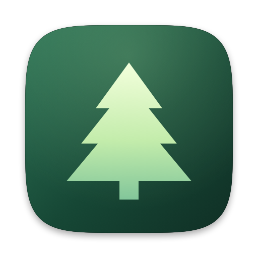

See what’s ready
Find app and macOS updates in one place. Install eligible app updates together or open the updater when an update needs your attention.

EvergreenSee what’s ready to update, install eligible updates together, and choose when your running apps can restart.
macOS 14 or later · Apple silicon and Intel
Find app and macOS updates in one place. Install eligible app updates together or open the updater when an update needs your attention.
Turn on a schedule when you’re ready. Pick the time and days, and keep the apps you rely on out of scheduled runs.
Check for updates, open Settings, or return to Evergreen from the menu bar. Start at login and hide the Dock icon if you like.
Build with Xcode 26 or later. The app and its bundled command line tool run on macOS 14 or later and are written in Swift.
Read the build and setup guidegit clone https://github.com/kwonye/evergreen.git
cd evergreen
./scripts/build-app.sh
open .build/Evergreen.app